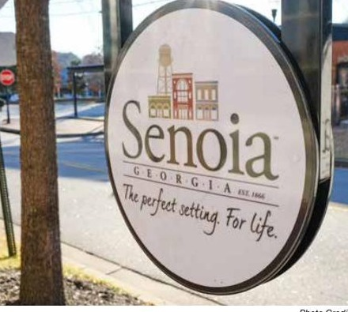
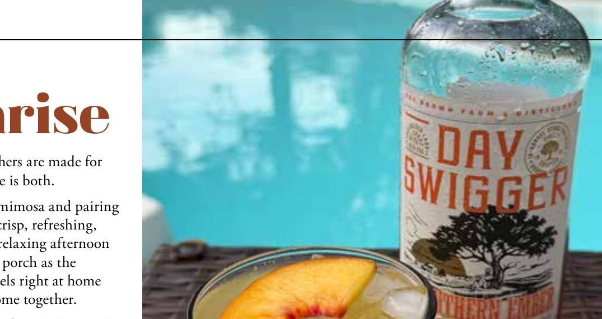
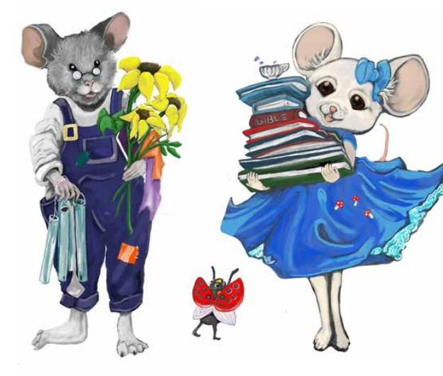

History, home cooking, and the small reflections that give Senoia its character.
Every July, we're reminded how blessed we are to call America home. Among the many freedoms we enjoy, one is especially easy to overlook: the freedom to worship. Across our community each week, church doors open without fear, Bibles are read openly, and families gather to pray.
While political freedom shapes the way we live, spiritual freedom has the power to shape who we become — and perhaps that's the greatest freedom worth celebrating this season.
Ask anyone what they love about Senoia and you'll almost always hear the same answer: the community. Yes, there's the small-town charm, the Hollywood history, the local shops. But Senoia's heart runs deeper than surface-level treasures.
What makes Senoia so special is the sense of belonging it cultivates. Neighbors care, strangers are welcomed, and differences are respected. It doesn't require uniformity, only unity.
Formerly our Historical Society column — renamed in Issue 06 to honor Ellis Crook, who spent 95 years calling Senoia home and helped preserve its story before his passing on June 22, 2026.

What began with $55.89 left over from a 1976 Bicentennial celebration became the seed money for something lasting — a Society dedicated to making sure Senoia's stories are never lost to time.
Open weekends · senoiahistory.com

Some cocktails are made for celebrations. Others are made for slow summer afternoons. The Senoia Sunrise is both.
Local artist Catrina Didier noticed the iconic red brick downtown and wondered: what if there was a mouse painted somewhere in town? The idea grew legs — or tiny painted paws — into the Downtown Senoia Mouse Hunt.
Pick up an activity booklet at the Welcome Center, track down each hand-painted mouse hidden in shop windows, and return your completed map for a prize. Proceeds support Catrina's mission work at home and abroad.
